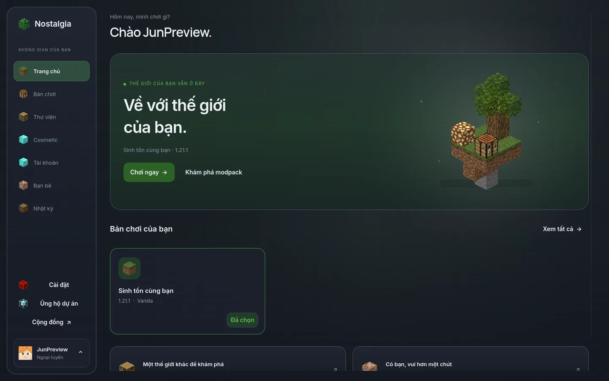
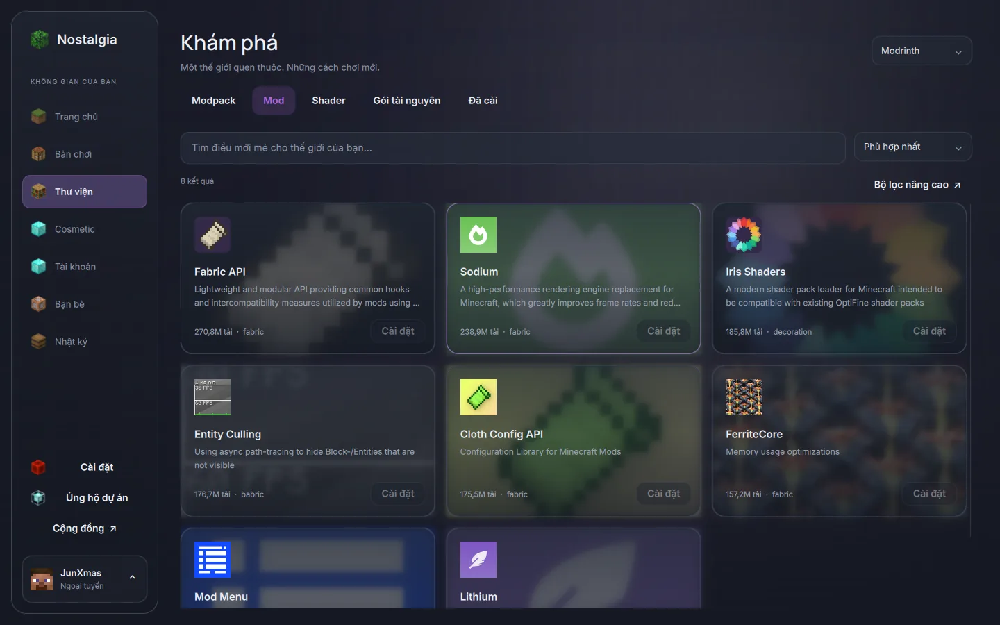

Your library, within reach
Mods, modpacks, shaders, and resource packs. Browse the details, choose a compatible version, and install right in the launcher.
A tidy home for lasting adventures.
From your first instance to worlds shared with friends.
Free to get started · Windows, Linux & macOS

CHOOSE HOW YOU PLAY
FAMILIAR, WITH A FRESH FEEL
Your instances, content, and friends.
Everything in its place, so you can spend more time playing.
Mods, modpacks, shaders, and resource packs. Browse the details, choose a compatible version, and install right in the launcher.
Keep content and settings separate, pin your favorites, import from other launchers, and back up before trying something new.
Add friends and invite them with room codes. Your Nostalgia account uses Google; Minecraft accounts are managed separately.
A TOUCH OF GLASS. A FRESH PERSPECTIVE.
Familiar colors, mica surfaces, and gentle motion.
Space for your Minecraft content to stand out.

THE SAME MODPACK. THE SAME ADVENTURE.
Hosts with Plus can share modpacks with friends. Guests choose what to install, see warnings before accepting files, and update the same instance next time.
Explore supporter plansYou choose what gets synced.
Only accept mods and custom files from people you trust. Syncing does not guarantee that files are safe.
Sync flow illustration · Not a launcher window
YOUR NEXT ADVENTURE
Choose your operating system, download, and get started.
Checking for the latest release…
Download launcher
Linux Mint: select Linux and download the .deb under Other formats.
Prereleases and drafts are excluded from the default download.
TAKE YOUR TIME
Choose the installer for your operating system and processor architecture.
Microsoft or Ely.by for Minecraft. Google for your Nostalgia account, friends, and supporter plans.
Create an instance, find a modpack, or import an existing world. Minecraft and Java are downloaded when needed.
BEFORE YOU BEGIN
Yes. Instance management, the content library, core launcher features, multiplayer, and hosting servers on your own machine are free. Nostalgia+ is an optional supporter plan; you can review its benefits and price in the launcher before buying.
No. Google is used for your Nostalgia account, friends, and premium benefits. To play with a Microsoft Minecraft account, you still need to sign in to Microsoft and own the appropriate edition of the game.
Yes. A host with Plus or above can enable modpack sharing. Friends accept the invitation and choose what to install. Host eligibility is checked by the backend. Only accept mods from people you trust.
No. The launcher helps you create, configure, and run a server on your own machine. Mod and plugin compatibility depends on the platform and version; connections from outside your network also depend on your network setup.
Choose a higher plan in the launcher. The backend calculates credit for the unused portion of your paid purchase and shows the price before you create an order. Renewing the same plan uses the regular price; gifted benefits do not generate credit.
Vietcombank payments are currently approved manually after the received funds are verified. The “I have transferred” button only requests a payment review; it does not activate a plan automatically.
Google sign-in uses your email, name, and avatar to create a Nostalgia account. The service stores data needed for friends, profiles, sign-in sessions, and supporter plans. You can play and manage basic instances without buying premium.